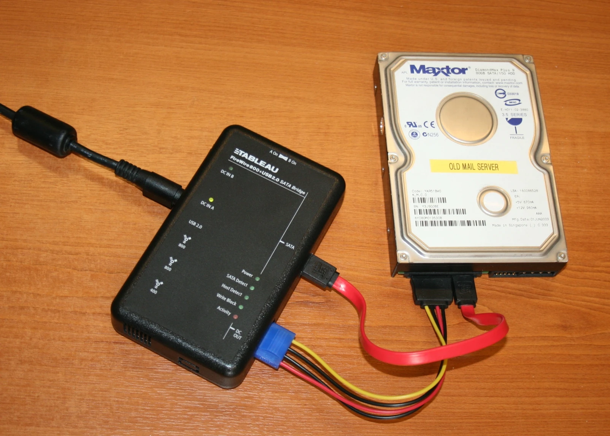

Digital Forensics with Paraben E3
Classroom experience with digital evidence examination and a clear framework for explaining findings.

My classroom experience
I used Paraben E3 in class. This case introduces that hands-on tool experience and the examination method I would explain to an employer. My academic foundation includes incident handling, networking security and systems administration coursework at CSUSB.
The examination question
A forensic tool is useful when its artifacts help answer a bounded question: what activity is supported by the supplied evidence, and which observations can another examiner revisit? A good walkthrough connects the evidence item, relevant artifacts, timeline and conclusion.
How I would present the walkthrough
- Identify the evidence. Record its origin, case context and integrity information before interpreting it.
- Review relevant artifacts. Explain which parsed records or file-system observations answer the assignment question, with artifact references.
- Reconstruct the sequence. Compare timestamps and context rather than assuming every artifact proves an action.
- Write the examiner’s findings. Cite the observations, distinguish interpretation and identify unresolved questions.
What the finished evidence section will contain
Coursework context, the permitted evidence description, genuine E3 captures, selected artifact references and an examiner-style summary. These will be added from the actual class material; the reference photograph shows forensic hardware, while my own E3 captures can be added with the assignment.
Connection to SOC investigations
SIEM events can identify an activity worth investigating. Forensic review asks what the retained device or file evidence supports. A shared timeline helps connect those perspectives without treating a detector match as a confirmed incident.
Academic foundation
Completed coursework: IST 5250 Incident Handling & Cyber Investigation and IST 4210 Advanced Networking & Security (Fall 2024). E3 classroom use is separately confirmed by me.
Scope
Classroom E3 usage is owner-confirmed. The original assignment and genuine E3 captures can be added to document the specific examination.